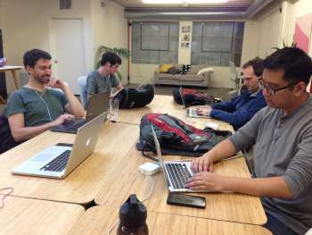

Free Code Camp MeetUp
The freecodecamp meetup gathers people who are learning how to code. The majority of people who attend this meetup are people who take free online classes in the website FreeCodeCamp.org
This is the link to FreeCodeCamp MeetUp web site
Overview
This meetup is open to all of those who want to be part of a supportive community to help each other to learn how to code and also collaborate in their projects. The members of this MeetUp work on their own projects; these projects come from the FreeCodeCamp website, which is a nonprofit organization that uses a web platform for free interactive learning in order to make web development accessible to anyone.
They usually meet Tuesdays and Thursdays in different locations and have chapters in different locations around the world.
Takeaways
Once in a while this MeetUp have a class if someone would like to teach something related to web development. One of the advantages of participating in this MeetUp is seeing what other people are doing and the feedback that others can give to your projects.
Tiffany, one of the members of the MeetUp, says "It is motivating see that you are not alone in learning about coding, people have different levels of knowledge, you can learn from others because there are different ways to do things in coding"
Additional aspects to have into account:
- The classes you take on the FreeCodeCamp platform are free.
- You can earn a certificate after completion of the track you choose.
- People can gain experience while helping nonprofits.